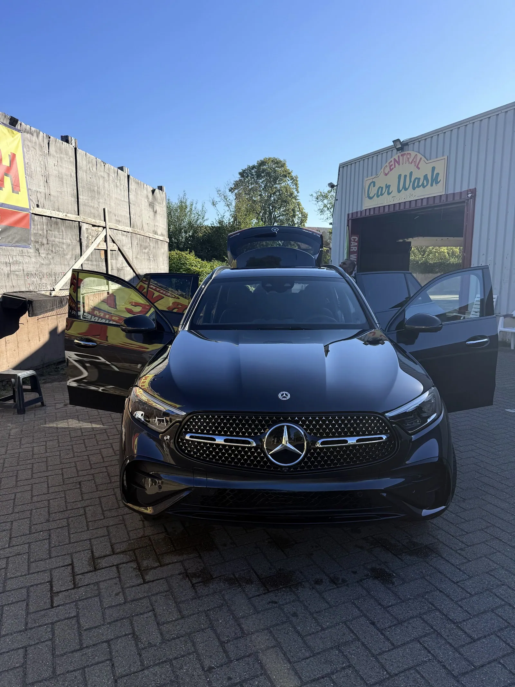
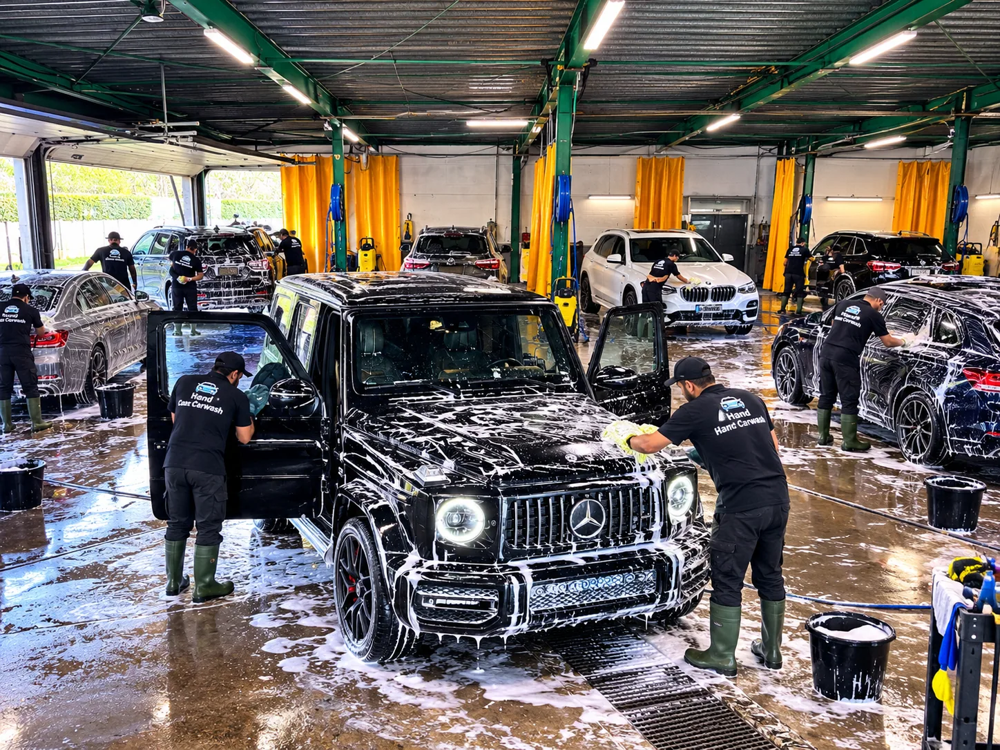
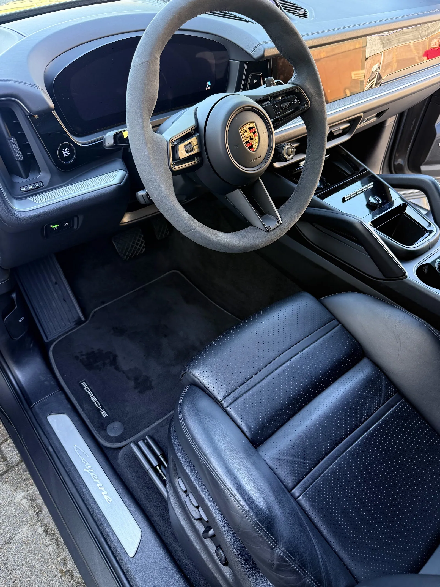
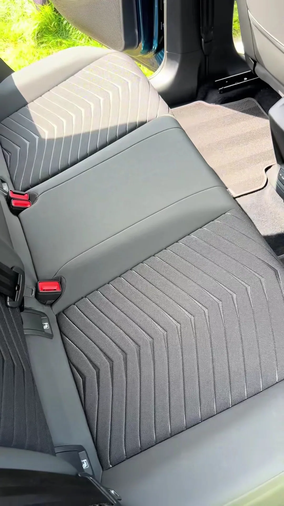
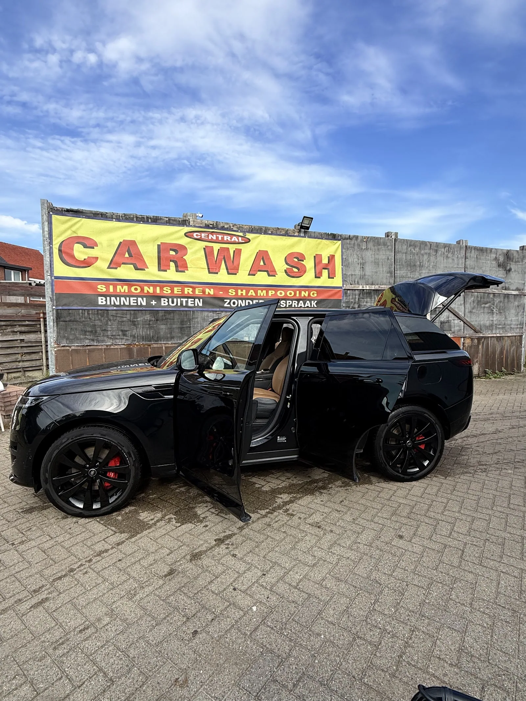
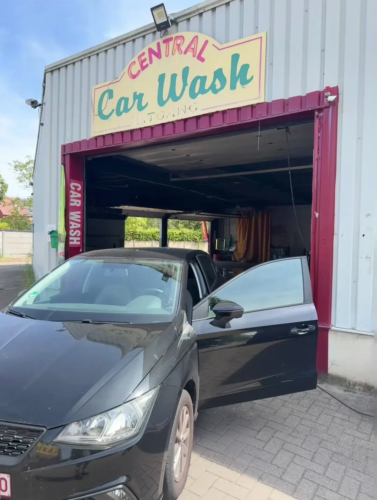
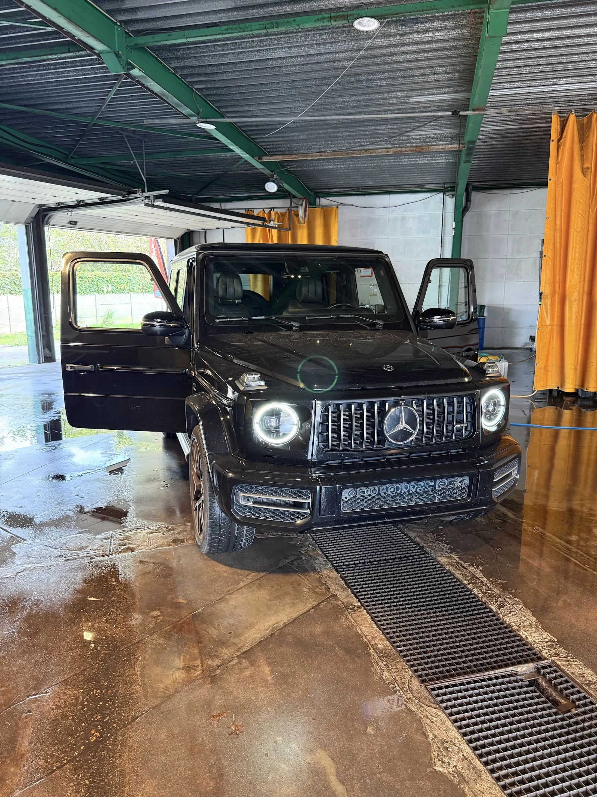
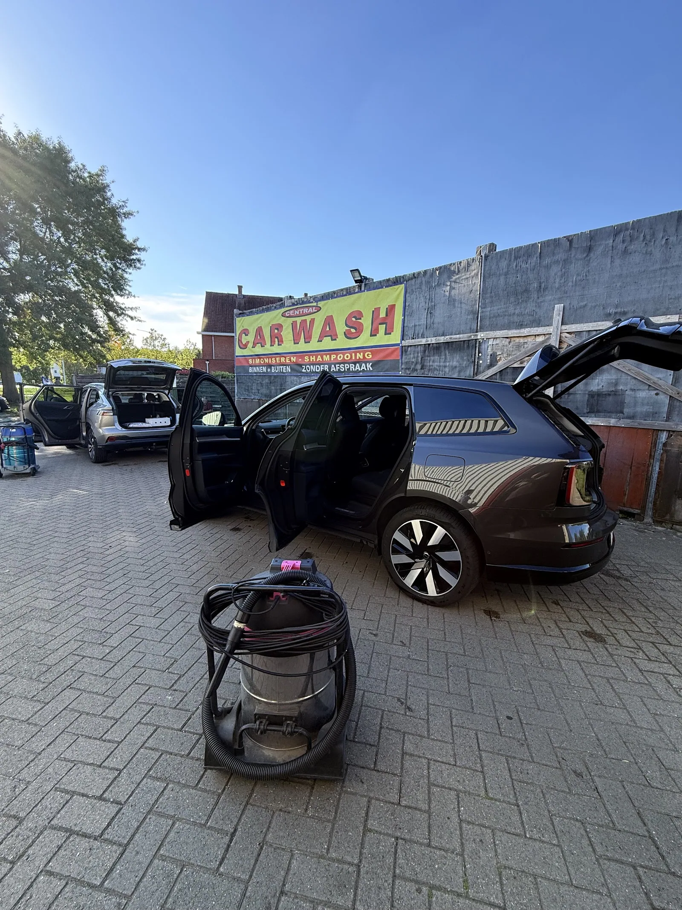
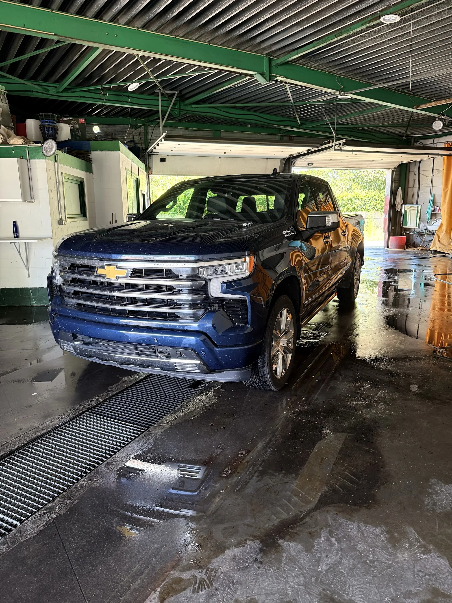

1Buiten wassen
Inschuimen, met de hand wassen en netjes droogmaken.

Bij Central Carwash wassen we je wagen met de hand. Van de velgen tot de matten, en als je wil ook de zetels. Rij gewoon binnen, wij doen de rest.
Kies wat je wagen nodig heeft en zeg het aan de mannen als je binnenrijdt. Twijfel je, dan kijken we samen.

1Inschuimen, met de hand wassen en netjes droogmaken.

2Stofzuigen, matten, dashboard en ramen.

3Zetels en tapijten diep gereinigd.

4Een beschermlaag die je lak laat glanzen.
De ingang van de wasplaats zit achteraan. Rij naast de e5-winkel door naar achteren en volg de pijlen.

De ingang van de wasplaatsEen stadsauto of een grote terreinwagen, we nemen voor elke wagen de tijd. Dit zijn wagens die de voorbije maanden bij ons stonden.



★★★★★Eerste keer geweest en dik content. Auto proper gewassen en vriendelijk ontvangen. Alles dik in orde en niks op aan te merken. Doe zo voort, mannen.
GGilbert GorisReview op Google
★★★★★Een propere wagen, goede service en oog voor detail maken echt het verschil. Klantvriendelijk, kwaliteit en een uitstekende prijs kwaliteitverhouding.
MMoska NanikhelReview op Google
★★★★★Super vriendelijk. Mijn auto was perfect in orde. Ik kom zeker nog eens terug.
FFamke Van BeekReview op Google
Oud-Strijderslaan 16, 2200 Herentals. Op vrijdag even middagpauze van 14 tot 15 uur.
| Maandag | 9 tot 18 uur |
| Dinsdag | 9 tot 18 uur |
| Woensdag | 9 tot 18 uur |
| Donderdag | 9 tot 18 uur |
| Vrijdag | 9 tot 14, 15 tot 18 uur |
| Zaterdag | 9 tot 18 uur |
| Zondag | Gesloten |
Neen. Je rijdt gewoon binnen tijdens de openingsuren. Wil je zeker zijn dat het meteen kan, stuur dan even een berichtje.
Achteraan, naast de e5-kledingwinkel. Volg de pijlen naar de wasplaats. Als je klaar bent, rij je vooraan weer buiten.
Na het wassen zetten we een beschermlaag op je lak. Je wagen glanst meer, en vuil en regen krijgen minder vat op de carrosserie.
Ja, van een kleine stadsauto tot een grote terreinwagen of pick-up. Twijfel je bij een bestelwagen, stuur dan een foto via WhatsApp.
Natuurlijk. Je kan blijven wachten of ondertussen even binnenspringen in de winkels in de buurt.
Ik maakte deze demo voor jullie om te tonen wat er kan. Na een kort gesprek maak ik er iets veel persoonlijkers van, helemaal naar jullie wens.
Vrijblijvend. Ik kom langs of we bellen.
Op maat, op jullie eigen domein.
Geen voorschot. Jullie betalen pas als alles klaar is.
Hosting, domeinnaam en kleine wijzigingen, zoals nieuwe openingsuren.
Omdat een voorbeeld meer zegt dan een mail. Zo zien jullie meteen wat er kan, en het kost jullie niets.
Nee. Het gesprek is vrijblijvend. Vinden jullie het niks, dan is het daarmee gedaan.
Na ons gesprek staat jullie site binnen 10 tot 14 dagen online.
Zeker. Jullie domeinnaam kan gewoon blijven, de nieuwe site komt in de plaats van de oude.
Nee, dat doe ik op basis van ons gesprek. Eigen foto's zijn mooi meegenomen, maar niet nodig om te starten.